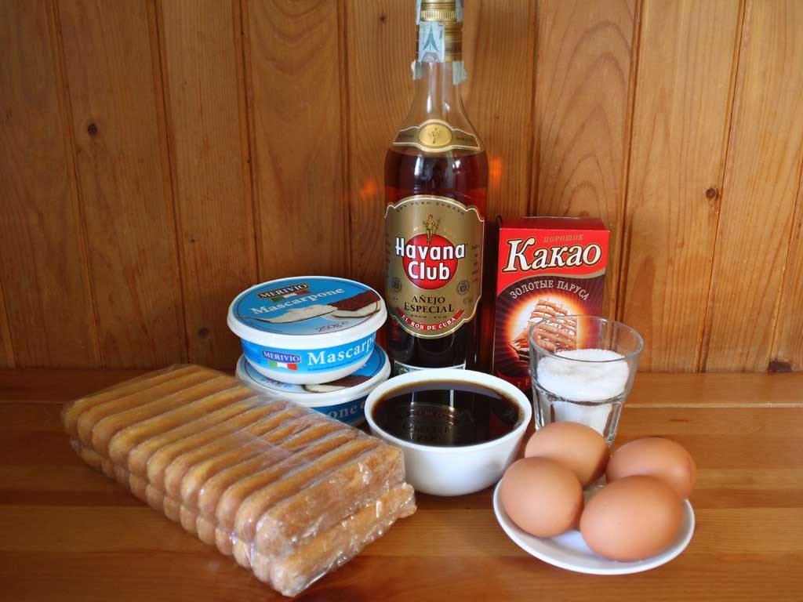
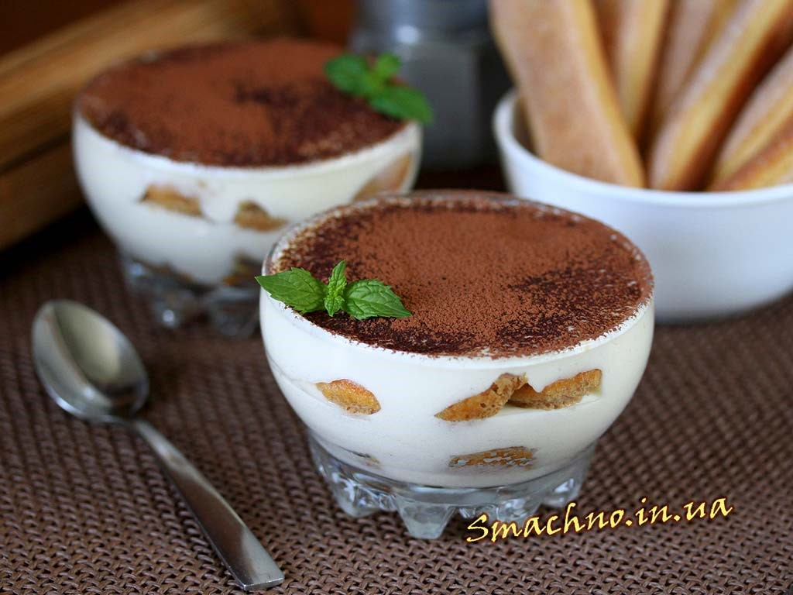

Desert$Coffe
Тірамісу
Інгредієнти:
- сир маскарпоне - 500 г
- цукор - 100 г
- яйця великого розміру - 4 шт.
- печиво савоярді - 24 шт. (200 г)
- заварна кава - 300 мл (3 ч. л. з вершком на 300 мл води)
- ром (кавовий лікер, коньяк, бренді) - 2-3 ч. л.
- какао-порошок або тертий чорний шоколад - для посипки

Готуємо крем
Оскільки до складу крему входять сирі яйця, їх слід обов’язково добре помити содою і облити окропом. Жовтки відділити від білків. Білки поки що покласти в холодильник, а жовтки збити з цукром в світлу пишну масу.
Приготування тірамісу
Тірамісу – ніжний італійський десерт, що готується на основі вершкового сиру маскарпоне і бісквітних паличок савоярді, просочених кавою з алкоголем. Приготувати його можна в одній великій формі або в невеликих порційних креманках. Готувати такий десерт легше у великіій формі, а от подавати простіше у креманках, оскільки тірамісу, через його ніжну структуру, буває складно акуратно нарізати порційними шматками. Дана кількість інгредієнтів розрахована на форму розміром 17х30 см або на 7-9 креманок.
У заздалегідь зварену і охолоджену каву додати алкоголь. Я додавала ром. Бісквітне печиво ненадовго, буквально на секунду, занурити в каву, щоб воно увібрало в себе трохи рідини, але повністю не розм’якло і одразу викласти на дно форми, де будемо робити тірамісу.
Поверх печива викласти половину підготовленого крему.
На крем знову викласти змочене у каві бісквітне печиво.
До збитих жовтків частинами додати маскарпоне кімнатної температури і щоразу акуратно дерев’яною ложкою чи лопаткою перемішувати його з жовтками, розтираючи сир об стінки миски, до утворення однорідної маси без грудочок.
Холодні білки збити з дрібкою солі до стійких піків.
Збиті білки в три заходи вмішати в сирну масу.
На печиво – крем, що залишився. Десерт покласти в холодильник мінімум на 4 год.
Також такий десерт, як зазначалося вище, можна приготувати і в порційних креманках. В такому випадку я викладаю крем і бісквітне печиво в наступному порядку: крем - печиво - крем - печиво - крем.
Перед подачею десерт вийняти з холодильника, щедро посипати какао-порошком або тертим чорним шоколадом і подавати до столу. Ніжний італійський десерт Тірамісу готовий.